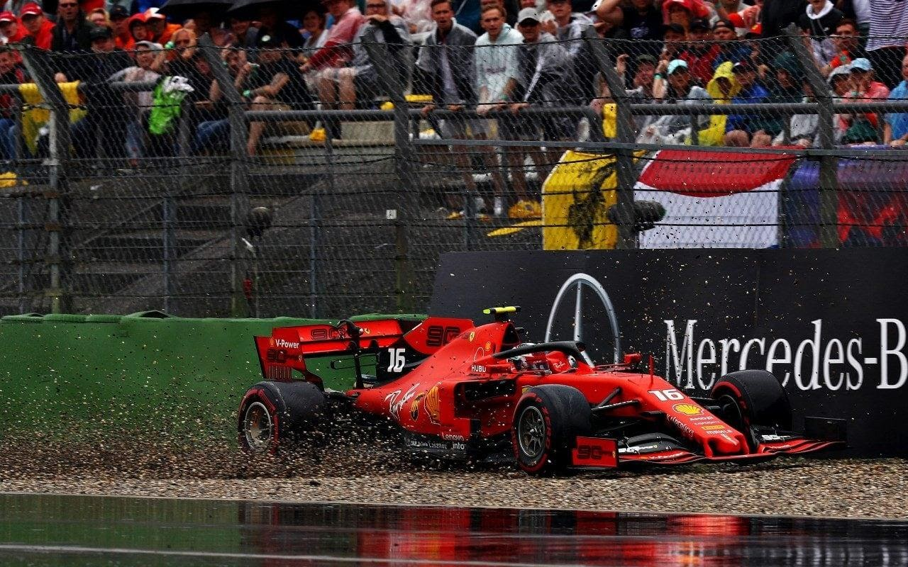

Das Rennen startete in starkem Regen, deswegen wurden vier Einführungsrunden hinter dem Safety Car absolviert. Dann entschied sich die Rennleitung für einen normalen Start.
Verstappen kam schlecht weg und verlor zwei Positionen. In der zweiten Runde drehte Perez sich und schied aus. Der Unfall löste eine Safety Car-Phase aus; welche viele Fahrer nutzen, um auf Intermediates zu wechseln. In der sechsten Runde war Vettel schon auf Platz 10 vorgerückt. In Runde 19 verlor Sainz in der letzten Kurve die Kontrolle über seinen Wagen und rollte in die Auslaufzone. Jedoch war diese spiegelglatt und Sainz rutschte völlig weg. Er konnte seinen Wagen aber wieder auf die Strecke bringen.
In Runde 24 war die Strecke schon so trocken, dass Vettel als erster im Feld auf Softs wechselte. Kurze Zeit danach wechselte Verstappen auf Mediums, Leclerc und Hamilton wie Vettel auf Softs. In Runde 29 konnte Leclerc wie Sainz in der letzten Kurve nicht richtig einlenken und verlor in der glatten Auslaufzone komplett die Kontrolle. Er schlitterte gegen die Wand und blieb im Kies stecken. Das Rennen war für ihn beendet. Ein weiteres Safety Car. Bevor der Führende Lewis Hamilton die 29. Runde beenden konnte, brach auch ihm in der letzten Kurve kurz das Heck aus. Das reichte schon, um nicht mehr die Kurve zu kriegen und auch er schlitterte in der Auslaufzone gegen die Wand. Besonders ironisch, da dort noch Werbung für Mercedes gemacht wurde, es wurde 125-jähriges Jubiläum gefeiert. Außerdem stand noch der Wagen von Leclerc
ein paar Meter weiter. Hamilton hatte aber, nicht wie Leclerc, noch ein bisschen Restgeschwindigkeit und schaffte es noch auf die Strecke. Er fuhr sofort in die Box, allerdings hinter einer aufgestellten Pylone, was ihm eine 5-Sekunden-Strafe einbrachte. Seine Standzeit alleine dauerte 50 Sekunden! Alle Fahrer wechselten im Anschluss wieder auf Intermediates.
Das Rennen wurde kurz darauf wieder freiegegeben. In der 44. Runde passierte Hülkenberg das, was vorher Sainz, Leclerc und Hamilton passiert ist. Für ihn bedeutete der Unfall das Ende des Rennens. Kurz darauf fingen einige Fahrer wieder an, auf Trockenreifen zu wechseln.
In der 53. Runde verlor Lewis Hamilton in der schnellen Kurve eins die Kontrolle über sein Auto. Er konnte sein Auto aber noch abfangen und eine Kollision mit der Mauer verhindern. Seinem Teamkollegen Valtteri Bottas gelang dies vier Runden später nicht. Er drehte sich ebenfalls dort und berührte die Mauer frontal, sodass seine vorderen Radaufhängungen brachen.
Somit sahen die ersten Positionen wie folgt aus:
Verstappen-Kvyat-Stroll-Sainz-Vettel
Es gab eine weitere, kurze Safety Car-Phase, welche das Feld für die letzten vier Runden nochmal zusammenrückte. Vettel überholte Sainz, Stroll und in der vorletzten Runde auch noch Kvyat. Er schaffte es von P20 auf P2. Verstappen gewann das Rennen, Vettel wurde Zweiter und Kvyat im Toro Rosso Dritter. Stroll wurde Vierter, Sainz Fünfter, danach Albon, Grosjean, Magnussen, Hamilton und auf dem 10. Platz der Williams von Robert Kubica. Er errang nach Abu Dhabi 2010 und nach langer Pause erstmals wieder Punkte. Die beiden Alfas wurden nachträglich wegen irregulärer Kupplungen disqualifiziert.
Von der F1-Community wurde dieses Rennen offiziell zum Rennen des Jahrzehnts gewählt.
